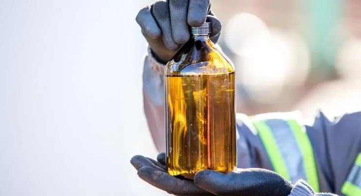

Green Refinery Cilacap memainkan peran penting dalam pengembangan rantai pasok Bioavtur nasional. Fasilitas ini menjadi titik temu antara inovasi proses kilang, efisiensi operasional, dan kebutuhan industri penerbangan akan bahan bakar yang lebih berkelanjutan.
Dengan kapasitas proses yang terus diperkuat, Green Refinery tidak hanya berfungsi sebagai pusat pengolahan, tetapi juga sebagai fondasi transformasi energi di sektor aviasi. Kehadiran fasilitas ini menegaskan komitmen Pertamina dalam membangun ekosistem energi masa depan yang lebih tangguh.
Peran Green Refinery
Green Refinery dirancang untuk mengolah bahan baku terbarukan menjadi produk energi dengan standar kualitas industri modern. Dalam konteks Bioavtur, fasilitas ini memastikan bahwa proses produksi berlangsung efisien, aman, dan selaras dengan target pengurangan emisi jangka panjang.

Skala Produksi Nasional
Penetapan Cilacap sebagai pusat produksi Bioavtur nasional memberi peluang besar untuk memperkuat suplai domestik SAF. Langkah ini membantu Indonesia membangun kemandirian energi baru sekaligus menciptakan pijakan yang lebih kuat untuk pertumbuhan industri penerbangan rendah emisi.
Fondasi Masa Depan SAF
Keberadaan Green Refinery yang kuat memungkinkan pengembangan SAF dilakukan secara lebih konsisten dan terukur. Dari sini, Indonesia berpeluang memperluas kapasitas produksi, meningkatkan kualitas operasional, dan mempercepat kontribusi terhadap target dekarbonisasi sektor penerbangan.